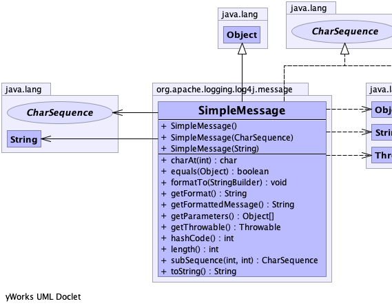
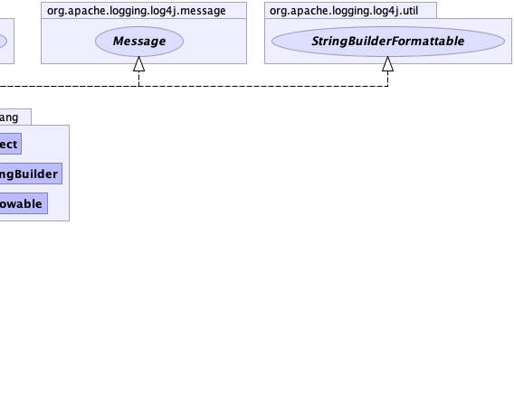

public class SimpleMessage extends java.lang.Object implements Message, StringBuilderFormattable, java.lang.CharSequence
|  |  |
| Constructor and Description |
|---|
SimpleMessage()
Basic constructor.
|
SimpleMessage(java.lang.CharSequence charSequence)
Constructor that includes the message.
|
SimpleMessage(java.lang.String message)
Constructor that includes the message.
|
| Modifier and Type | Method and Description |
|---|---|
char |
charAt(int index) |
boolean |
equals(java.lang.Object o) |
void |
formatTo(java.lang.StringBuilder buffer)
Writes a text representation of this object into the specified
StringBuilder, ideally without allocating
temporary objects. |
java.lang.String |
getFormat()
Returns the message.
|
java.lang.String |
getFormattedMessage()
Returns the message.
|
java.lang.Object[] |
getParameters()
Returns null since there are no parameters.
|
java.lang.Throwable |
getThrowable()
Always returns null.
|
int |
hashCode() |
int |
length() |
java.lang.CharSequence |
subSequence(int start,
int end) |
java.lang.String |
toString() |
public SimpleMessage()
public SimpleMessage(java.lang.String message)
message - The String message.public SimpleMessage(java.lang.CharSequence charSequence)
charSequence - The CharSequence message.public java.lang.String getFormattedMessage()
getFormattedMessage in interface Messagepublic void formatTo(java.lang.StringBuilder buffer)
StringBuilderFormattableStringBuilder, ideally without allocating
temporary objects.formatTo in interface StringBuilderFormattablebuffer - the StringBuilder to write intopublic java.lang.String getFormat()
public java.lang.Object[] getParameters()
getParameters in interface Messagepublic boolean equals(java.lang.Object o)
equals in class java.lang.Objectpublic int hashCode()
hashCode in class java.lang.Objectpublic java.lang.String toString()
toString in interface java.lang.CharSequencetoString in class java.lang.Objectpublic java.lang.Throwable getThrowable()
getThrowable in interface Messagepublic int length()
length in interface java.lang.CharSequencepublic char charAt(int index)
charAt in interface java.lang.CharSequencepublic java.lang.CharSequence subSequence(int start,
int end)
subSequence in interface java.lang.CharSequence